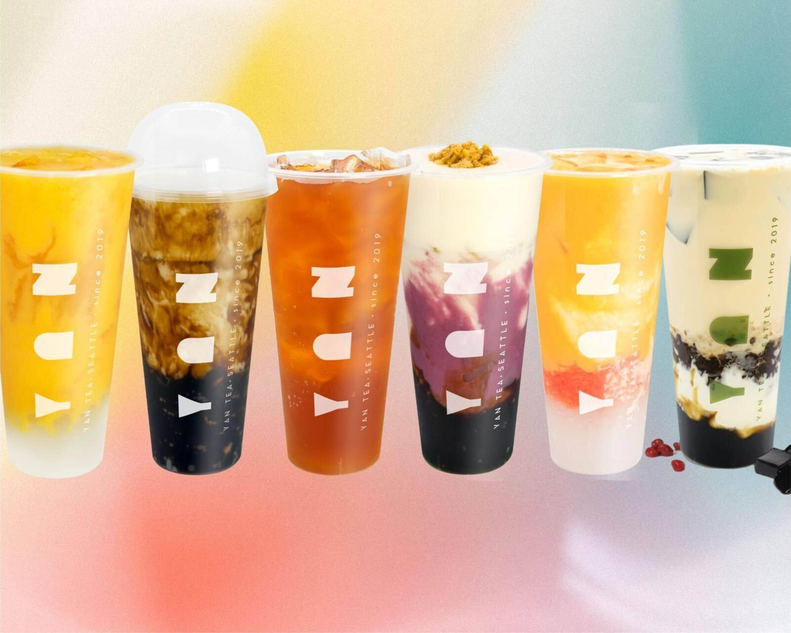

University District · Seattle · Since 2019
Real tea, real fruit, made fresh every day — right here in the University District.

YAN TEA 岩茶 · Seattle
Our Favorites
Our Story
Yan Tea opened in 2019 with a single belief: great tea deserves great ingredients. Fresh fruit, real cheese foam, hand-crafted toppings — no shortcuts, no compromises.
岩 (Yán) — rock, depth, origin. For us, it means drinks made with care, every single day.
Find us at 4744 University Way NE. Walk-ins always welcome.
Visit Us
Address
4744 University Way NE
Seattle, WA 98105
Phone
Hours
Check Google Maps for current hours
YAN TEA · Seattle
4744 University Way NE
Seattle, WA 98105